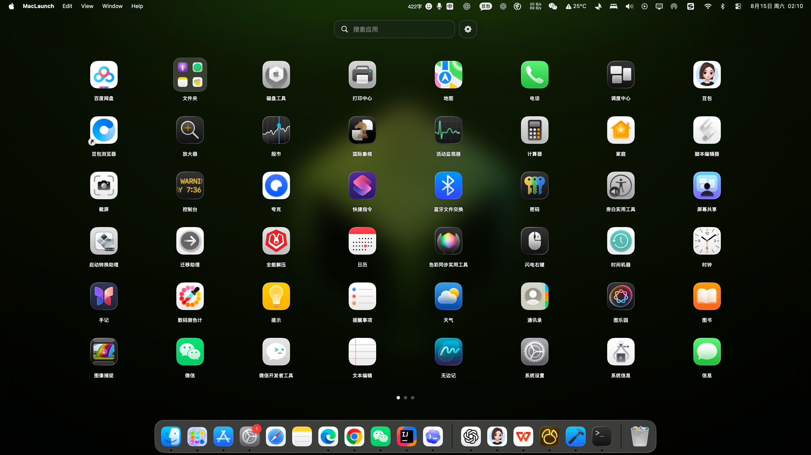

真正免费，
也真正属于你。
没有试用期，没有会员，没有功能解锁。完整源码公开在 GitHub，你可以自由使用、查看和改进。
在 GitHub 查看项目 ↗LaunchEase 用跟手翻页、清晰的应用网格、自由整理和完整辅助功能，让寻找应用重新变得简单。
壁纸、图标、搜索与程序坞自然地融在一起。没有多余窗口，也没有复杂操作。

没有试用期，没有会员，没有功能解锁。完整源码公开在 GitHub，你可以自由使用、查看和改进。
在 GitHub 查看项目 ↗所有核心功能完整开放，不设置付费门槛。
源代码公开透明，欢迎 Issue 与 Pull Request。
无需账号，不含遥测，不上传你的应用信息。
没有广告和推荐流，只专注于快速启动应用。
从滚动翻页、程序坞拖放到完整键盘操作，LaunchEase 尽可能使用 macOS 熟悉的逻辑回应每一个动作。
页面实时跟随触控板和鼠标滚轮移动，再自然停靠。首尾页不会循环跳转，页面圆点同步响应。
拖动图标改变位置，其他应用自动补位；重叠即可创建毛玻璃文件夹。
保留应用原生名称，输入文字立即筛选，点击后启动并自动隐藏。
自由设置扫描目录与行列数，图标尺寸和上下间距根据屏幕与程序坞大小自动计算。
四指捏合打开、四指张开退出；应用图标可以自然拖入程序坞，启动和整理保持连贯。
支持 VoiceOver、完整键盘导航，并跟随系统的“减少动态效果”“提高对比度”和“不使用颜色区分”。
一键导出或导入扫描目录、行列布局、应用顺序、文件夹与图标设置，重装后也能快速恢复熟悉的启动台。
LaunchEase 以 MIT License 开源。你可以检查每一行代码、提交建议，或构建属于自己的版本。
@main
struct LaunchEaseApp: App {
var body: some Scene {
WindowGroup {
ContentView()
}
}
}
// Free, open source, local-first.整个过程只需要一分钟。
获取最新的 LaunchEase.zip。
将 App 放进“应用程序”文件夹。
首次运行先右键应用并选择“打开”。
LaunchEase 免费、开源，并将一直专注于纯粹、顺滑且人人可用的 macOS 启动体验。
约 11 MB · Apple 芯片 · macOS 26.5+